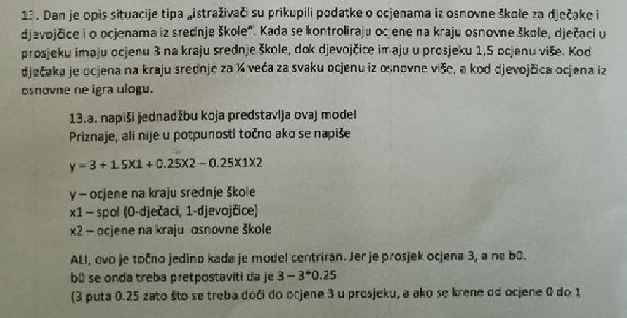

Aa-Kilotee nabaci cifru pa cemo ti odgovarat
Aa-Kilotee koliko para
prvi do boga Ne bih se baš složio… Koliko smo svi ovdje dobili svašta đabe fino riješeno ili da je neki kolega sam objavio sva svoja rješenja? Tako da ovaj dečko je pristojno priupitao i mislim da netko s E smjera kojemu dobro ide, može u 15 min riješiti ovaj 3. i 4. zad. Inače @Aa-Kilotee preporučam da kažeš frendu nek pošalje mail nekom asistentu da mu pomogne te zadatke ili znam da bi sigurno bio voljan pomoći Vladimir Šimović s TVZ-a (https://www.youtube.com/channel/UCkwpw88Pj8agokoXHE_kuEg/), on inače i daje ovako privatne instrukcije pa bi nakon rješavanja potaknuo interes ako mu što nije jasno da uzme kod njega instrukcije.
Pozdrav, ima li tko da dobro razumije RPPP (Razvoj primijenjene programske potpore) zainteresiran za davanje instrukcija?
Pozdrav, trebao bih pomoć oko nekih zadataka iz statistike za drugi faks. Nisam još imao ViS pa ako netko može pomoći neka se javi u DM, po mogućnosti što prije 😁
Primjer zadatka

Eugene ne pomazem ljudima koji promoviraju seksizam
Pozdrav, dajem instrukcije iz Fiz1 i osnova elektrotehnike. Ukoliko je netko zainteresiran neka pošalje poruku 🙂
rebinjo Na kojoj godini si faksa i po kojem programu si radio fiziku, po fer2 ili fer3 jer meni trebaju instrukcije za fiziku po fer3 programu ne za fiz1 po fer2 programu.
Dajem instrukcije iz Osnova elektrotehnike, na drugoj sam godini, 099 426 6337😋
Ako netko drzi instrukcije iz SiS-, uzivo il prek teamsa/skypea, hit me up na pm s brojem moba.
noobcamper 3. godina, fer2 program
Ako netko drugi drži instrukcije iz fizike neka se obrati na PM.
Jel daje netko instrukcije iz tinfa za ljir?
Jeli daje netko instrukcije iz elektromagnetskoh polja, ispit mi je u petak?
Ne znam postavljam li pitanje na pravom mjestu, ali zna li netko raditi igre u unity-u?
Jel mi moze netko pomoc oko programiranja u Javi? Rok mi je krajem 8. i pocetkom 9.!
Pozdrav kolege, dajem instrukcije iz etnobiznisa.
trazim skype/teams instrukcije iz ELE1R. hit me up na pm!
dajem instrukcije iz DIGLOG i OOP-a
Nudim instrukcije iz SIS-a Javite se ako ste zainteresirani 🙂